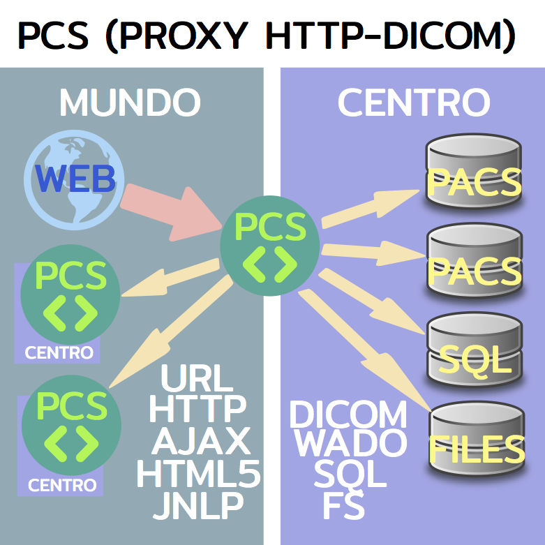

La red DICOM local de un establecimiento de salud (servicio de radiología, clínica u
hospital) consiste de varios PACS (Picture Archiving and Communication System, concepto
genérico que incluye también estaciones de trabajo e modalidades de adquisición de
imágenes) que hablan DICOM entre sí. No están configurados para soportar consultas desde
internet, la red de redes.
Para ese último, conviene establecer un CUSTODIO entre la red mundial y cada
establecimiento que se encargue de los problemas de direccionamiento, protocolo de
comunicación, seguridad de datos etc... Es la razón por la cual hemos creado el PCS
(Picture Communication System). El PCS tiene un pie dentro de la red mundial y otro
dentro del establecimiento. Desde la red mundial se hace posible consultar imágenes
médicas disponibles desde un PACS de un establecimiento a través del PCS del
establecimiento.
Además, un PCS puede asociarse con el PCS de otro establecimiento y consolidar resultados
obtenidos dentro de ambos establecimientos.

Identificación del CUSTODIO en la red de redes
El PCS tiene doble identidad. Una, local, por adentro del establecimiento particular,
y otra, global, publicada en la red de redes.
Del lado del mundo, identificamos el PCS con:
- un OID
- un URL global
- un titulo corto (de hasta 16 caracteres) fácil de recordar
CUSTODIO y PACS
El CUSTODIO maneja 4 tipo de conexiones :
- a PACS corriendo localmente en referencia al custodio (por http)
- a PACS accesibles a traves de la red DICOM local (por DICOM DIMSE)
- a PCS custodios de otros establecimientos (por http)
- a PACS locales de otros establecimientos accedidos mediante el custodio
correspondiente (por http)
Las propiedades de cada PACS incluyen:
- OID del pacs (normalmente extiende el OID del PCS
correspondiente)
- preferredstudyidentificator (StudyInstanceUID o AccessionNumber)
- custodiantitle
- cutodianoid
- custodianglobaluri
- pacstitle (nombre corto usado localmente en las transacciones con
protocolo DICOM DIMSE)
Si el PACS es local en relación al CUSTODIO, se agregan propiedades que definen el
modo de comunicación entre ellos. Se usa siempre el protocolo más rápido
disponible:
- En primer lugar SQL. Junto con SQL, file system o si no está disponible
wadouri.
- En segundo lugar, DICOM DIMSE.
Cada PCS mantiene una lista exhaustiva de PACS locales y configuraciones para
cada uno de ellos.
- sqlprolog (permite conectarse al sql del device)
- sqlstringencoding (4=UTF-8, 5=latin1)
- sqlmap (enlace al diccionario que lista en lenguaje sql específico
las traducciones de los queries usados)
- filesystembaseuri (en caso de acceder directamente a los archivos de
imágenes)
- wadolocalouri (uri del servicio en caso que el PACS local soporte
esta funcionalidad)
- wadouriadditionalparameters (por ejemplo
'&transferSyntax=1.2.840.10008.1.2.4.90' para pedir las imágenes
con compresión JPEG2000 sin pérdida)
- dcm4cheelocaluri (uri del dcm4chee-arc-light del PCS usado como proxy
para las operaciones DICOM DIMSE)
- dcm4cheedimseproxytitle (aet de dcm4chee-arc-light cuando funciona
como proxy DICOM DIMSE)